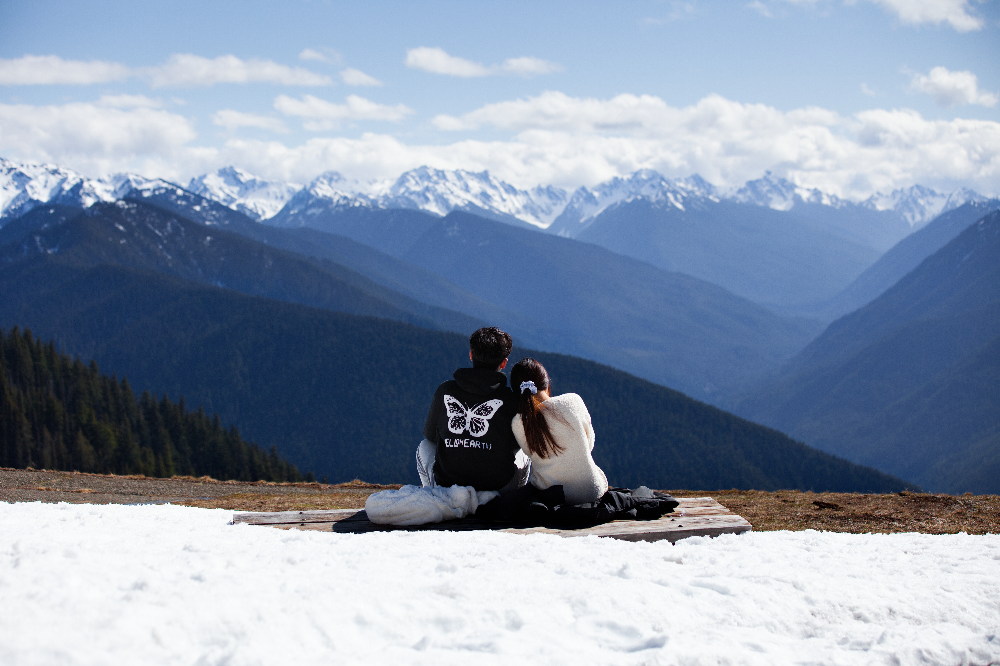
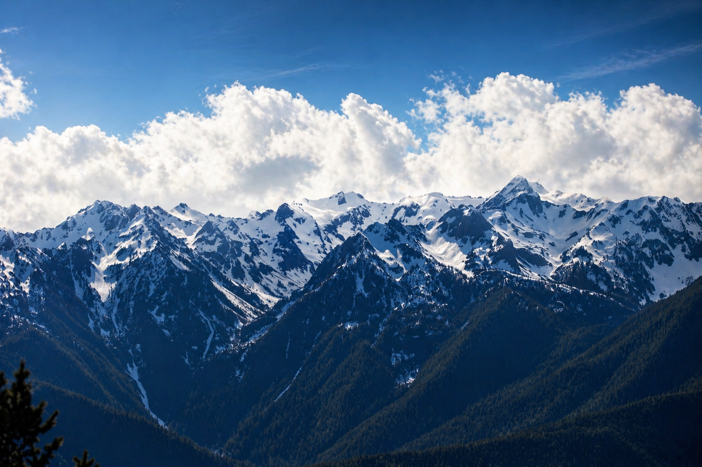

Travel Notes
City in the Clouds
This trip included both Olympic National Park and Mount Rainier National Park. We did beautiful trails in both places, with amazing scenery and a little danger along the way.
On the drive to Olympic, we even got a tire puncture, which added another challenge to the trip. It was full of unexpected moments, a few difficulties, and a lot of fun.
Selected Photos
Moments from Seattle

